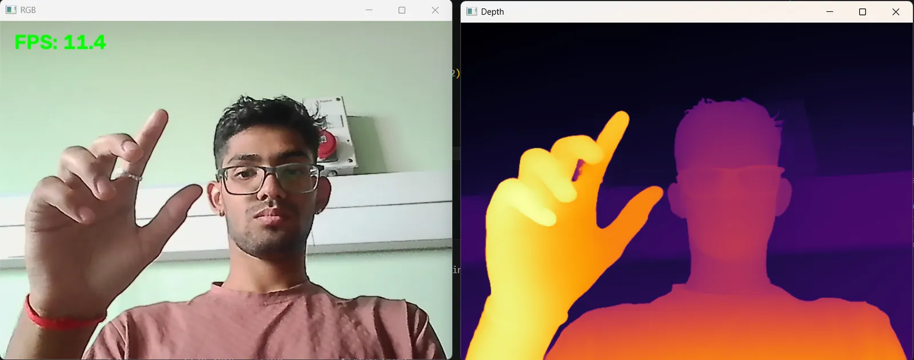
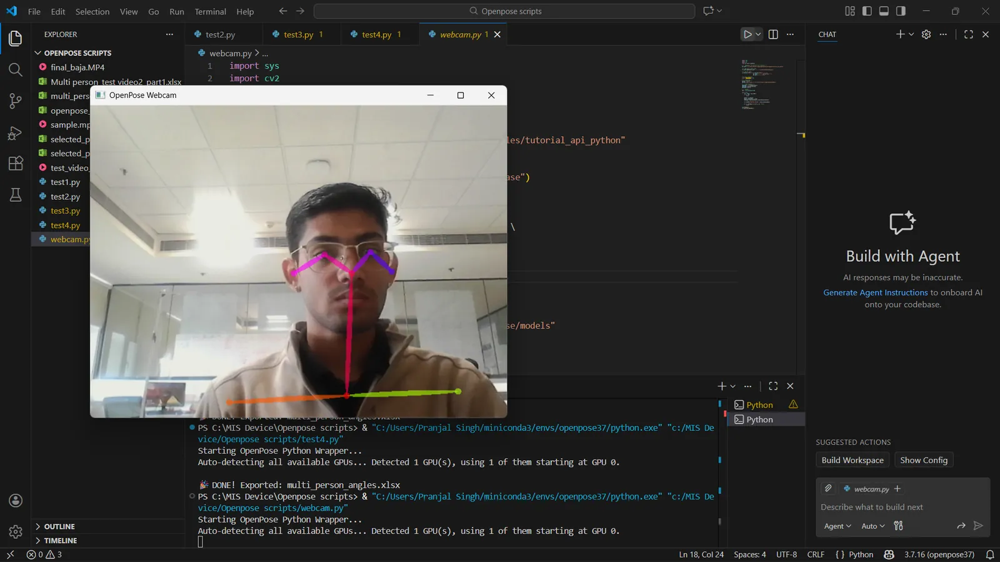
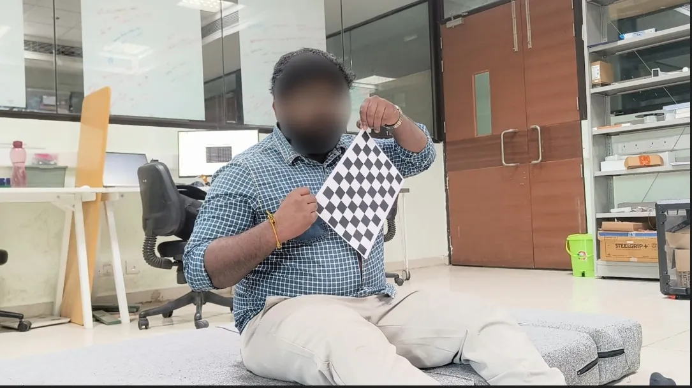
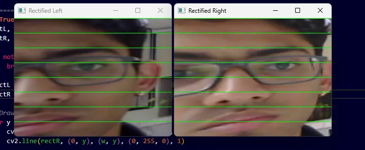
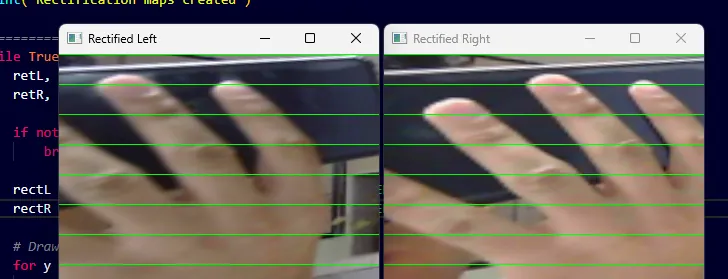
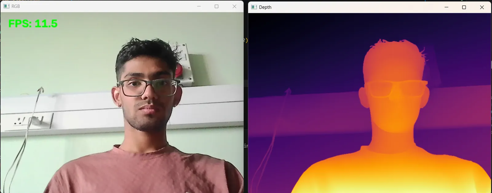

Measuring how surgeons move, with two ordinary webcams
Markerless motion capture for the operating theatre: live joint angles from pose estimation, and depth from a calibrated stereo pair. No markers, no motion-capture room.
- With
- Dr. Jay Dhariwal (supervisor); Bavath D. (mentor)
- My part
- Camera calibration, pose tracking, joint angles, triangulation, depth mapping
- Tools
- Python, OpenCV, OpenPose, AlphaPose, Depth Anything; two webcams, 7 cm apart
- In numbers
- Up to 95–96% triangulated-distance accuracy · depth maps at about 11 frames a second
- Status
- Complete; validated on recordings of real procedures
This page is a piano roll. Its keys run down the left edge: click one, or click the paper to punch a note. Scrolling plays it.

The question
Movement says a lot about technique and fatigue, but measuring it usually needs a motion-capture room or markers on the body. Neither works in an operating theatre. How far could cheap cameras and open-source models go instead?
Pose and joint angles
I started with 2D pose estimation, first OpenPose and then AlphaPose, to find the joints of each person in the frame, and calculated joint angles from the keypoints. When a limb is hidden behind another person or an instrument, the code extrapolates the limb lines to carry the angle through the occlusion.
Then I ran the tracker on recordings of real procedures, with faces blurred.

Calibration and triangulation
For depth I paired two webcams 7 cm apart and calibrated them with a checkerboard: each camera’s intrinsics and lens distortion, then the pair’s position relative to each other. After rectification, the same point sits on the same row in both images, so its depth follows from how far it shifts between them. Triangulated distances came out in metres, up to 95–96% accurate in my tests.



Depth maps
Alongside the stereo pair I used Depth Anything for dense depth maps from a single camera, in real time at about 11 frames a second. To test depth on one object, I tracked a red pen cap and estimated its distance as it moved.

Also at QuEST Lab
- A literature review on contactless, gamified ways to assess physical and cognitive fatigue in clinicians, and on optical depth sensing.
- In a team of four, a pump and lining system for managing saline during minimally invasive surgery.
What it led to
At mPragati the 6-DOF arm has the same problem in another form: its servos can’t report where they are. The calibration and tracking I learned here is how I’m now giving it feedback.